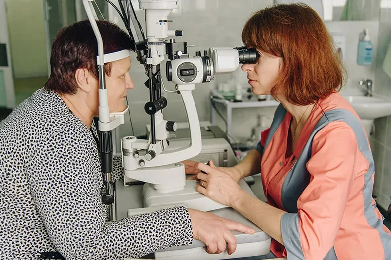
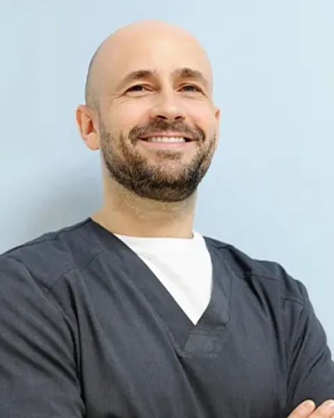
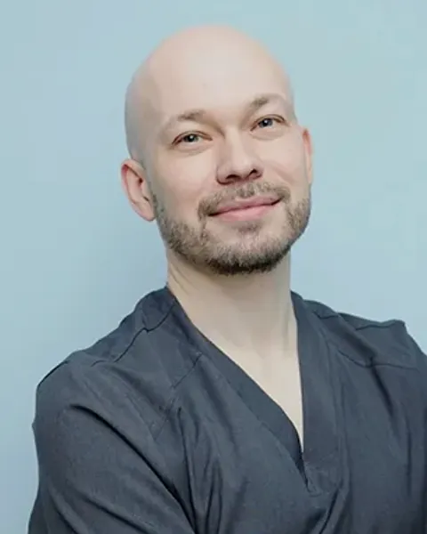
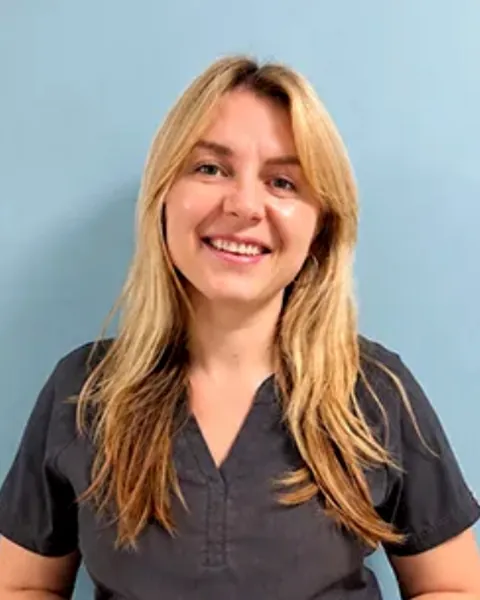
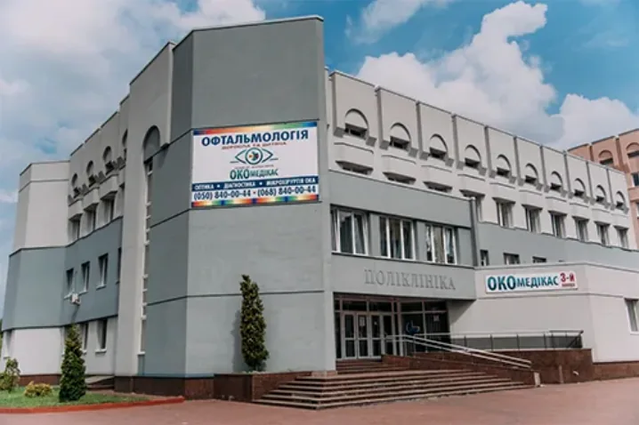

Офтальмологічна клініка в Черкасах
Катаракта, глаукома, сітківка, діти, оптика
проспект Перемоги, 16. Пн–Пт, до 17:00
Подзвонити в клініку (050) 840-00-44З чим ви звертаєтесь?
Обстеження зору
Консультація та діагностика, зокрема ОКТ і ОКТ-ангіографія. З обстеження починається майже кожен маршрут.
Склад і ціна Консультація та діагностика (Розділ у розробці) Подзвонити
Катаракта
Факоемульсифікація з імплантацією ІОЛ. Операції амбулаторні, без госпіталізації.
Чи потрібна операція і в якому порядку, вирішує лікар після обстеження.
ЦіниЛікарі Лікування катаракти (Розділ у розробці) Подзвонити
Глаукома
Антиглаукомні операції, ревізія фільтраційної подушки, лазерна трабекулопластика.
Хто приймає Лікування глаукоми (Розділ у розробці) Подзвонити
Сітківка і склоподібне тіло
Закрита вітректомія, видалення силікону, інтравітреальні ін'єкції.
Хто приймає Вітреоретинальна хірургія (Розділ у розробці) Подзвонити
Лазерні процедури
Не лазерна корекція зору
Панретинальна коагуляція сітківки, лазерна трабекулопластика, дисцизія вторинної катаракти, вітреолізис.
Хто приймає Лазерні методи (Розділ у розробці) Подзвонити
Інші операції
Блефаропластика, реконструкція повік, хірургія косоокості.
Перший візит Інші операції (Розділ у розробці) Подзвонити
Також приймають: отоларинголог і ендокринолог, (050) 840-00-44.

1 000 ₴ Комплексна діагностика і консультація офтальмолога
Обстеження займає близько години.
600 ₴ для пенсіонерів, учасників бойових дій та осіб з інвалідністю.
Що входить
- Візометрія без корекції і з корекцією
- Авторефрактометрія
- Пневмотонометрія
- Оптична й ультразвукова біометрія
- Біомікроскопія переднього відрізку ока
- Огляд очного дна лінзою Гольдмана
- Встановлення діагнозу і призначення лікування
Пільги
Для військовослужбовців і переселенців діють окремі умови. Які саме, уточнюйте за телефоном перед візитом.
(050) 840-00-44 Консультація та діагностика (Розділ у розробці)
Ціни: Катаракта
8 200 ₴
Факоемульсифікація з пакетом медикаментів
від 8 600 ₴
Інтраокулярна лінза (ІОЛ)
Окремі позиції прайсу, не підсумок. Що входить у вартість, уточнюйте за телефоном.
- Доплата за ускладнену катаракту
- 5 000 ₴
- «Анестезія +»
- 1 000 ₴
Діагностика
- Комплексна діагностика і консультація офтальмолога
- 1 000 ₴
- Для пенсіонерів, учасників бойових дій та осіб з інвалідністю
- 600 ₴
- Дитячий огляд
- 1 000 ₴
Підбір окулярів
- Підбір окулярів або контактних лінз
- 300 ₴
- При замовленні оптики в клініці
- 0 ₴
Ціни наведено для ознайомлення, вони можуть відрізнятися. Уточнюйте за телефоном (050) 840-00-44.
Уточнити вартість Повний прайс (Розділ у розробці)
Шаткун, Печерій, Зіменкова, Харенко
-

Шаткун Андрій Анатолійович
Лікар-офтальмолог вищої категорії, офтальмохірург.
Консультації вітреоретинального хірурга за попереднім записом.
(050) 840-00-44 -

Печерій Вадим Геннадійович
Лікар-офтальмолог, ретинолог, лазерний хірург, глаукоматолог.
Понеділок і вівторок: консультативний прийом, лазерне лікування глаукоми і сітківки.
(050) 840-00-44 -

В клініці обстежено 105 166 пацієнтів і прооперовано 8 043 — за даними клініки
Усі лікарі (Розділ у розробці)
Від 5 до 18 років
Комплексне обстеження з консультацією дитячого лікаря-офтальмолога: 1 000 ₴. Приймає дитячий офтальмолог Харенко Інна Ігорівна.
Що перевіряють
Візометрія, кольоротести, авторефрактометрія, тонометрія, біомікроскопія, резерви акомодації, клінічна рефракція в умовах мідріазу, огляд очного дна, біометрія очного яблука, консультаційний висновок лікаря.
З чим звертаються
Астигматизм, короткозорість, далекозорість, амбліопія. У відділенні є апаратне лікування та електронні оклюзійні окуляри VIDI Smart Glasses. Що підходить дитині, вирішує лікар.
Дитяче відділення (Розділ у розробці) VIDI Smart Glasses (Розділ у розробці)
Оптика: (096) 840-53-53
Оптика: окремий номер для окулярів і контактних лінз
- Підбір окулярів або контактних лінз
- 300 ₴
- При замовленні оптики в клініці
- 0 ₴
- Лінзи
- від 40 ₴
- Оправи
- від 53 ₴
Пн–Пт, до 17:00 Сторінка оптики (Розділ у розробці)
Черкаси

м. Черкаси, проспект Перемоги, 16
Пн–Пт, до 17:00
Зупинка «Парк Перемоги». Автобус: 5, 6, 13, 16, 20, 22, 25, 29, 36, 115. Тролейбус: 8, 14.
(050) 840-00-44 (068) 840-00-44
Оптика: (096) 840-53-53
-
Шпола
вул. Амосова, 10
Офтальмологічне відділення Шполянської районної лікарні
Сторінка кабінету (Розділ у розробці) -
Знам'янка
вул. Грушевського, 15, каб. 21
Знам'янська міська лікарня ім. Лисенка
Сторінка кабінету (Розділ у розробці) -
Драбів
вул. Садова, 1Б, каб. 102
Поліклініка Драбівської багатопрофільної лікарні
Сторінка кабінету (Розділ у розробці) -
Голованівськ
вул. Незалежності, 2, кабінет № 15
Голованівська центральна районна лікарня
Сторінка кабінету (Розділ у розробці) -
Чигирин
вул. Замкова, 90, кабінет офтальмолога № 5
КНП «Чигиринська багатопрофільна лікарня»
Сторінка кабінету (Розділ у розробці)
Перший рівень акредитації